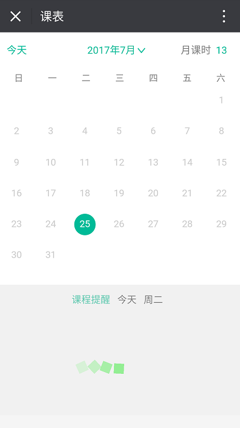
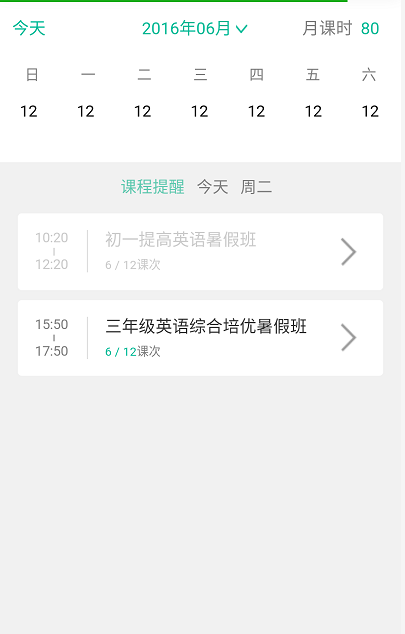
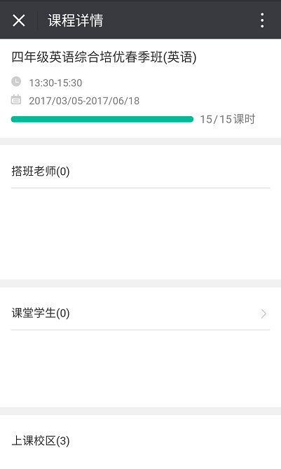
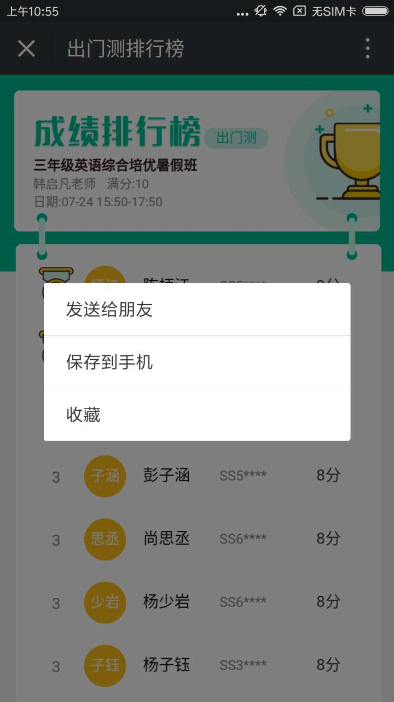
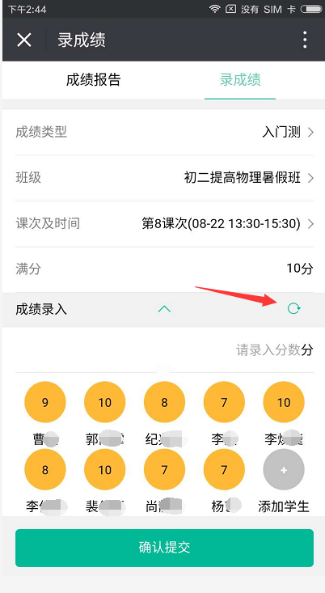
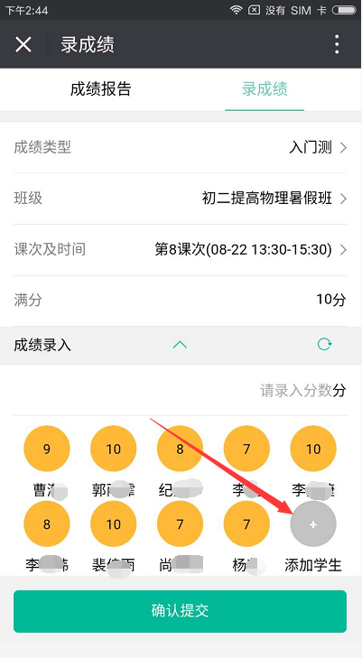
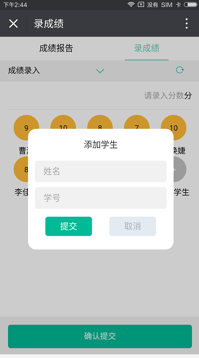

1.课表功能
1.1课程提醒数据一直处于加载状态
答： 请确认当前网络是否健壮，然后点击右上角的“。。。”选择“刷新”刷新页面。
1.2日历日期信息显示有误
答：请确认页面顶部的绿色进度条是否加载完毕。未加载完时：请耐心等待页面进度条加载完毕。加载完毕后：请点击右上角的“。。。”选择“刷新”刷新页面。
1.3e2登录后无法查看课表信息
答：请确认登录用户是否拥有教师编码
1.4课程详情页面无数据
答：关闭当前页面，重新点击“课表”选择课次进入此页面或点击右上角的“。。。”选择“刷新”刷新页面。
2.学情功能
2.1当天课表内有某班级的课次但是录成绩时却没有该班级
答：请确认课表内该班级是否已开课，录成绩时展示班级的逻辑是：已开课未结课(结课后仍保留七天)的班级信息。
2.2录成绩时成绩类型选择项展示空白
答：确认网络是否健壮，点击右上角的“。。。”选择“刷新”刷新页面。
2.3老师录入学员信息后学员查看无成绩数据
答：请清除微信缓存，并刷新当前页面。
2.4我的班级里有某位同学但是录入成绩时却没有
答：如果是报名系统新录入的新生，会有一个同步过程需要等待24小时。
2.5录成绩时课次显示有缺失
答：请确认要录入的课时是否已开课，录入成绩时课次展示逻辑：已开课的课次。
2.6成绩录入后提交失败
答：确认当前网络是否健壮或后台同事是否在修改代码。
2.7刷新页面清除缓存后数据依然没有更新
答：退出已登录的账号，重新登录再次刷新页面。
2.8如何分享学员成绩排行榜
答：进入成绩排行榜页面，长按成绩排行榜图片会出现多个选项。如下图：可以选择“发送给朋友”以图片的形式发给朋友，也可以选择“保存到手机”以图片形式保存到手机相册。
2.9课表内有某学员信息但是录成绩时没有该学员信息
答：可能由于缓存未及时更新造成，数据未同步；点击“成绩录入”右侧的刷新按钮，刷新学员数据即可更新。
2.10班级内有某位学员听课但是课表和录入成绩时均未有该学员信息
答：由于数据同步需要一定时间，在此情况下可以手动添加学员进行打分；待数据同步完成后数据将会自动更新。
 